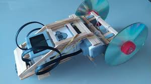

O futuro da robótica é marcado por avanços tecnológicos que prometem transformar a indústria, a saúde, a casa e a forma como interagimos com a tecnologia.
A robótica tem origem na ficção científica, na antiguidade e na invenção de autômatos. O termo "robótica" foi cunhado pelo escritor Isaac Asimov
Os pilares da robótica são sensores, atuadores, controle e inteligência artificial. Esses elementos formam a base do funcionamento dos robôs.
Os pilares da robótica são sensores, atuadores, controle e inteligência artificial. Esses elementos formam a base do funcionamento dos robôs.
A robótica é uma área multidisciplinar que envolve conhecimentos de: Mecânica, Eletrônica, Hidráulica, Pneumática, Computação.
A robótica educacional é uma área de conhecimento que se apoia em: Decomposição, Reconhecimento de padrões, Abstração, Algoritmos.
A robótica educacional ajuda a promover o aprendizado, estimulando o uso crítico e criativo de materiais e a experimentação de ideias.
A robótica pode ser usada para desenvolver habilidades em estudantes, como: Trabalho em grupo, Desenvolvimento do pensamento crítico e criativo, Aprendizado prático e interativo, Fomento à persistência e resiliência, Integração de conhecimentos interdisciplinares.
A robótica tem vários objetivos, incluindo a criação de tecnologias inovadoras, a automatização de tarefas e o desenvolvimento de competências
Joseph F. Engelberger é considerado o "Pai da Robótica" por ter comercializado o primeiro robô industrial, o Unimate.
Retiram alguns empregos a humanos
A robótica tem inúmeras vantagens, tanto na indústria, na educação, quanto na sustentabilidade.
Aumento da produtividade:Robôs conseguem realizar tarefas repetitivas e perigosas com mais velocidade e precisão do que humanos.
A Robótica Industrial é utilizada principalmente na automação de processos de manufatura, montagem, soldagem e pintura, e oferece diversas vantagens, como aumento da produtividade, precisão, e segurança, além de redução de custos operacionais e melhoria na qualidade dos produtos.
A robótica pode reduzir o custo unitário de produção.

A precisão e repetibilidade dos robôs resultam em um acabamento de alta qualidade.
Os robôs podem substituir os humanos em tarefas perigosas, como aquelas que envolvem altas temperaturas, substâncias tóxicas ou operações pesadas.
A robótica estimula o raciocínio lógico, a inteligência emocional e a interação interpessoal.
Desenvolvimento de habilidades de resolução de problemas
Os estudantes são desafiados a buscar soluções aplicando o conhecimento teórico adquirido.
Desenvolvimento de autonomia e confiança
Criar e finalizar um projeto é uma conquista que ajuda a desenvolver um senso de valor próprio.
Coleta e reciclagem de lixo: Robôs podem ser programados para identificar e coletar resíduos em ambientes urbanos
Para isso, terá que estudar alguns temas:
Separe materiais reserva.
→↓↑←